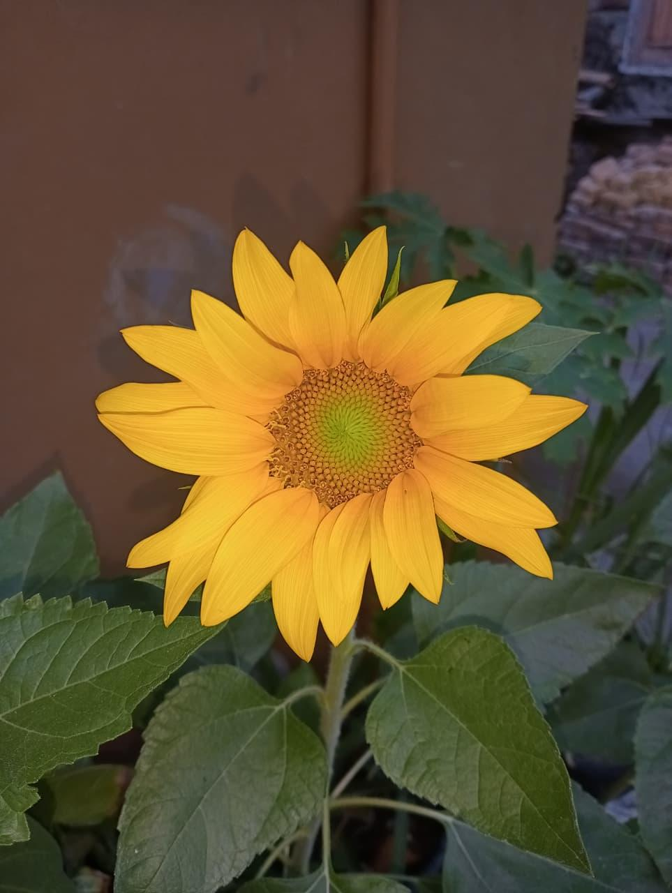
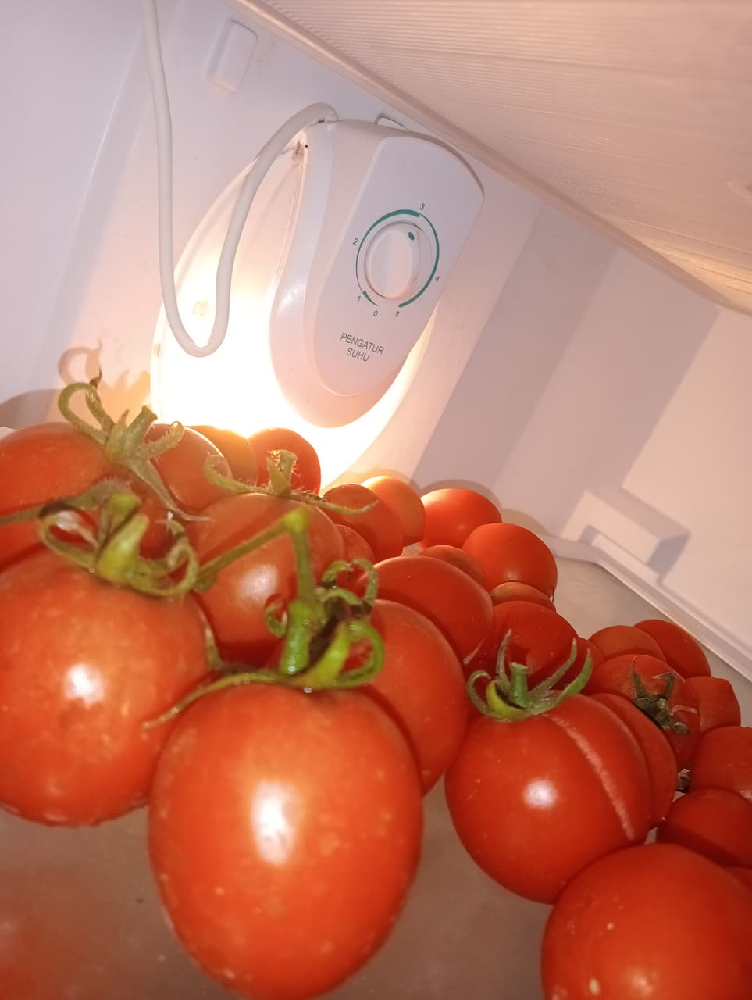
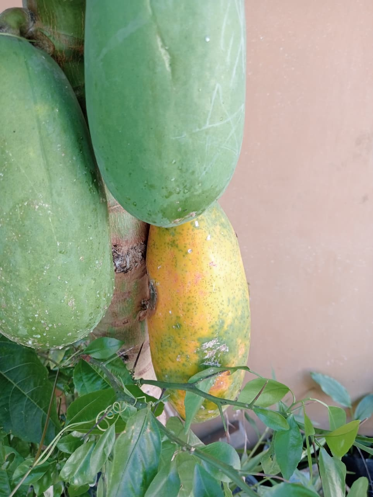
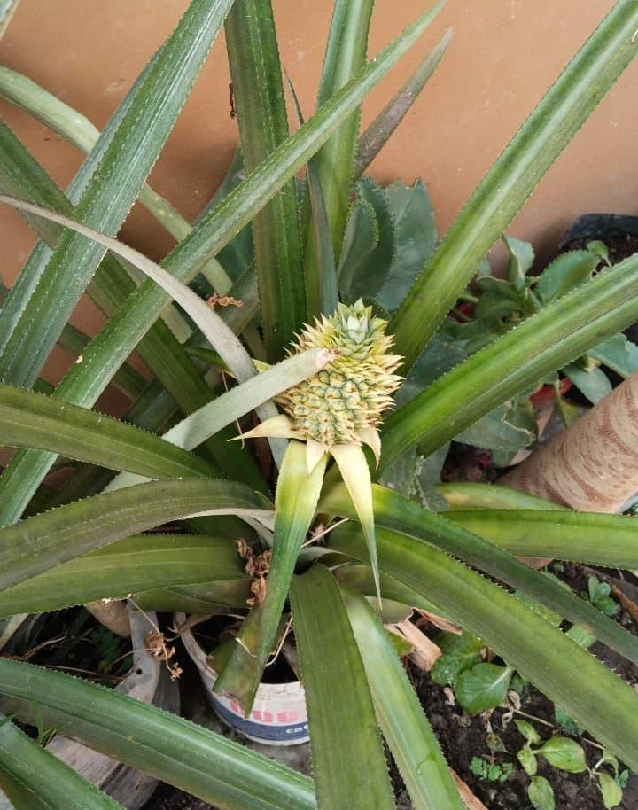
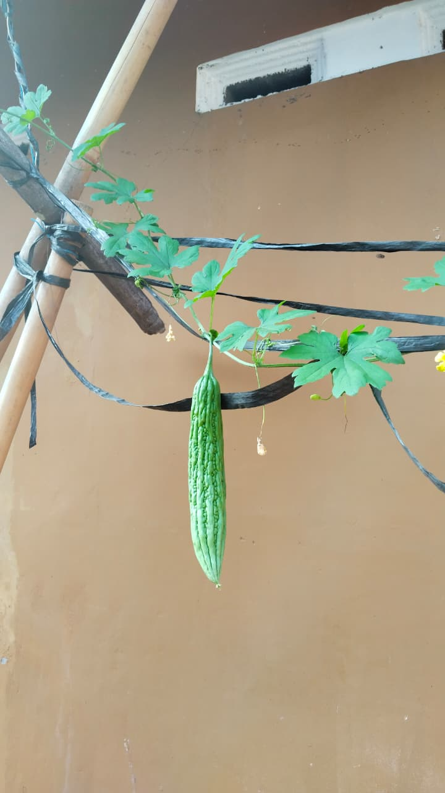
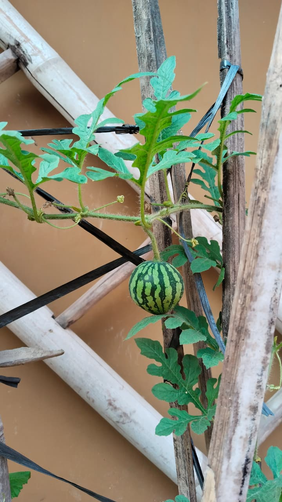

|
HOBI BERKEBUN
Dokumentasi Tanaman & Kebun Rumah |

|
Galeri Kebunku
Merawat tanaman dari benih hingga tumbuh subur.
(Petunjuk: Foto di bawah ini bisa dipencet/diklik untuk melihat ukuran penuh)
|
1. Bunga Matahari  Bunga matahari yang tumbuh mekar cerah di halaman rumah. |
2. Panen Tomat  Hasil panen buah tomat segar dari pot sendiri. |
|
3. Pepaya  Pepaya yang tumbuh subur di kebun rumah. |
4. Nanas Berduri  Penantian lama akhirnya berbuah juga. |
|
5. Pare Gantung  Pemberian rambatan pada tanaman agar buah lebih besar. |
6. Semangka Rambat  Semangka diberi rambatan tetap bisa berbuah. |


| « Kembali ke Album | | | Kembali ke Halaman Hobi » |